K562 Activating DNase matched - State 1:Tss (n=82)
K562 Activating DNase matched - State 1:Tss (n=82)
[
See group descriptions
]
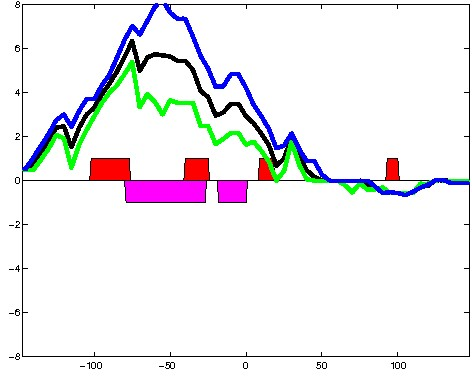
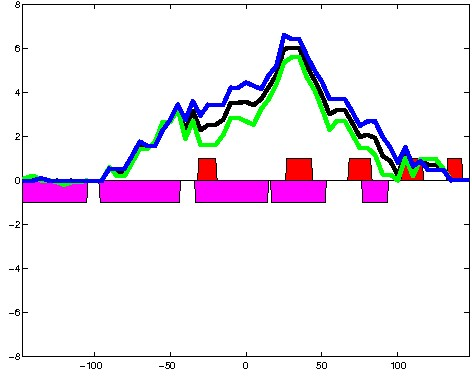
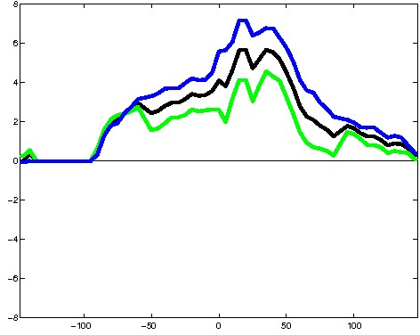
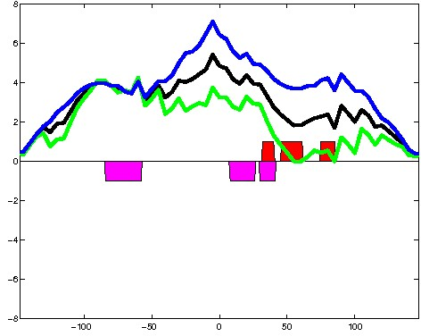
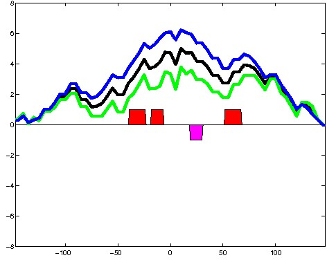
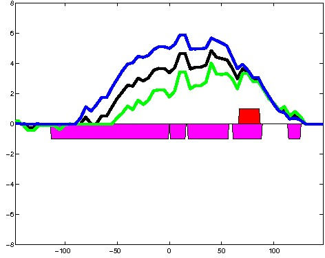
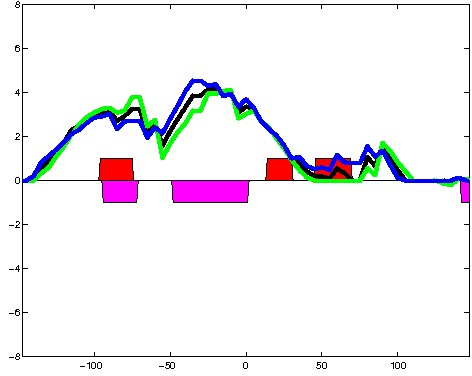
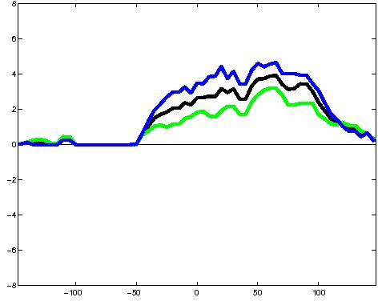
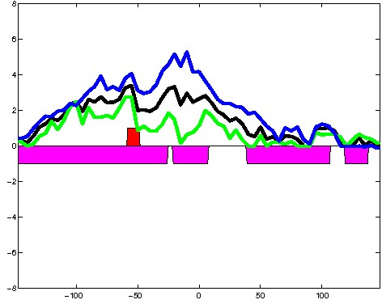
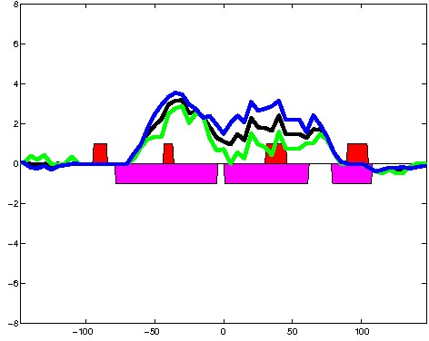
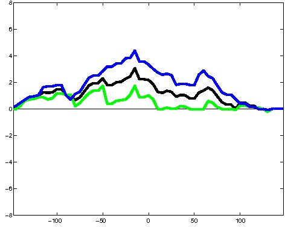
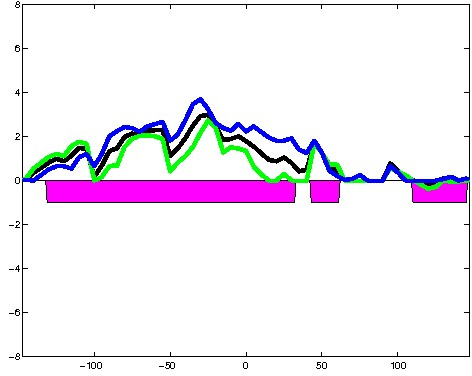
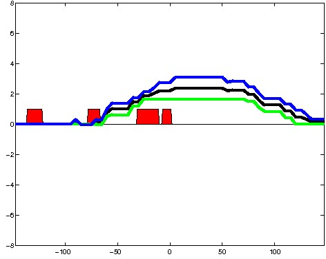
; picked in K562 (state 1:Tss, DNase); matched; chr4:39,460,489-39,460,783 (295bp)")
; picked in K562 (state 1:Tss, DNase); matched; chr12:120,884,089-120,884,383 (295bp)")
; picked in K562 (state 1:Tss, DNase); matched; chr9:136,214,869-136,215,163 (295bp)")
; picked in K562 (state 1:Tss, DNase); matched; chr12:498,649-498,943 (295bp)") 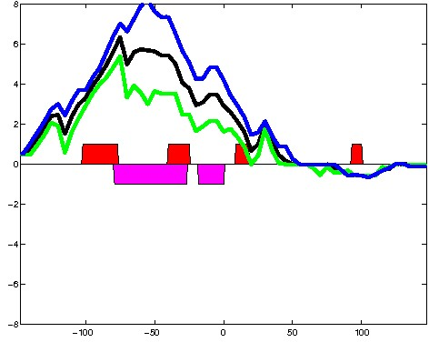
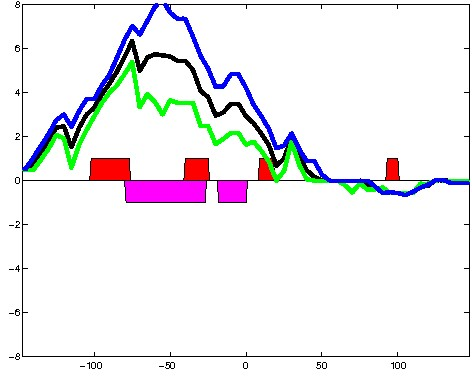
; picked in K562 (state 1:Tss, DNase); matched; chr10:102,820,389-102,820,683 (295bp)") 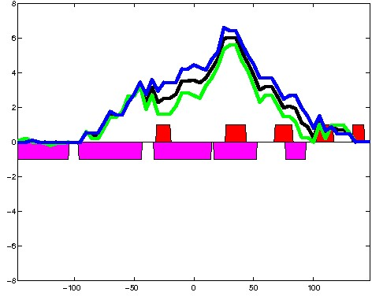
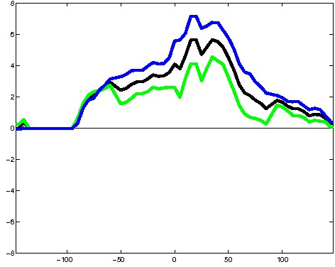
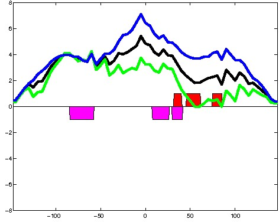
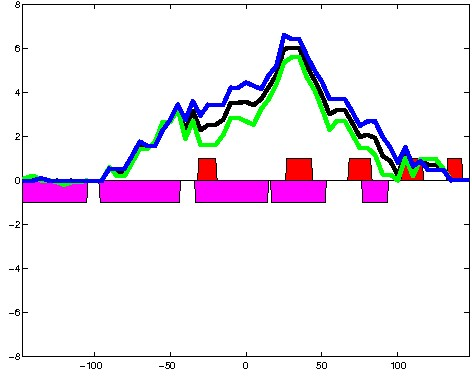
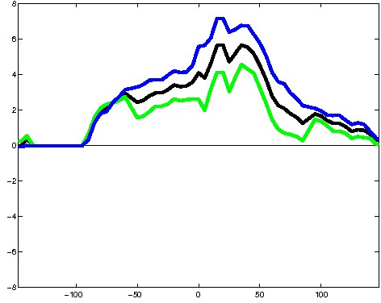
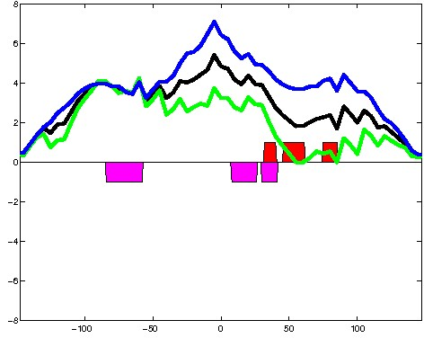
; picked in K562 (state 1:Tss, DNase); matched; chr19:37,663,529-37,663,823 (295bp)")
; picked in K562 (state 1:Tss, DNase); matched; chr5:179,050,669-179,050,963 (295bp)") 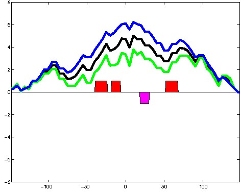
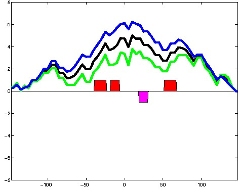
; picked in K562 (state 1:Tss, DNase); matched; chr17:73,043,009-73,043,303 (295bp)") 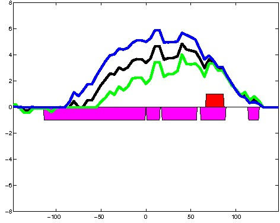
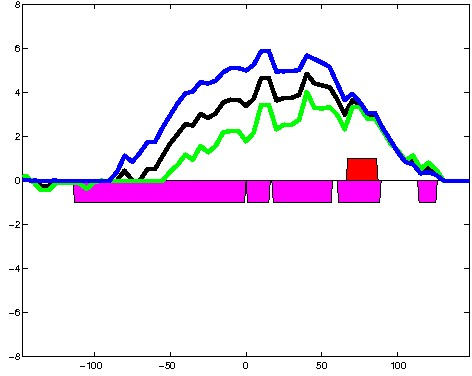
; picked in K562 (state 1:Tss, DNase); matched; chr14:23,504,289-23,504,583 (295bp)")
; picked in K562 (state 1:Tss, DNase); matched; chr9:124,921,969-124,922,263 (295bp)")
; picked in K562 (state 1:Tss, DNase); matched; chr17:7,760,789-7,761,083 (295bp)")
; picked in K562 (state 1:Tss, DNase); matched; chr19:19,314,129-19,314,423 (295bp)")
; picked in K562 (state 1:Tss, DNase); matched; chr1:247,267,609-247,267,903 (295bp)")
; picked in K562 (state 1:Tss, DNase); matched; chr16:89,882,989-89,883,283 (295bp)")
; picked in K562 (state 1:Tss, DNase); matched; chr1:39,325,369-39,325,663 (295bp)")
; picked in K562 (state 1:Tss, DNase); matched; chr16:31,884,949-31,885,243 (295bp)")
; picked in K562 (state 1:Tss, DNase); matched; chr11:64,885,129-64,885,423 (295bp)") 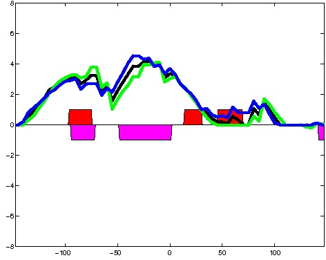
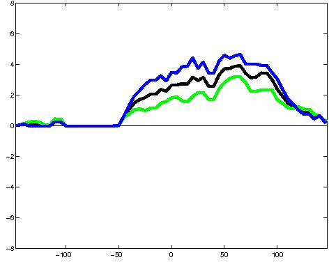
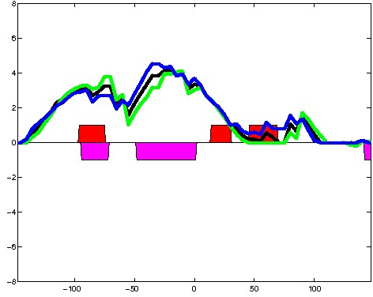
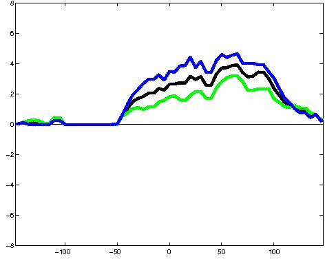
; picked in K562 (state 1:Tss, DNase); matched; chr4:4,543,649-4,543,943 (295bp)")
; picked in K562 (state 1:Tss, DNase); matched; chr10:106,099,849-106,100,143 (295bp)")
; picked in K562 (state 1:Tss, DNase); matched; chr14:96,829,549-96,829,843 (295bp)")
; picked in K562 (state 1:Tss, DNase); matched; chr1:28,879,309-28,879,603 (295bp)") 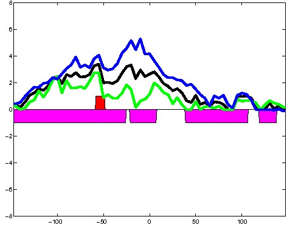
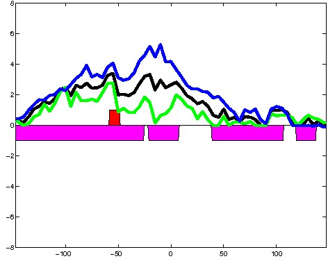
; picked in K562 (state 1:Tss, DNase); matched; chrX:23,685,369-23,685,663 (295bp)") 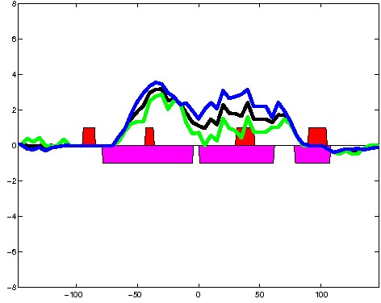
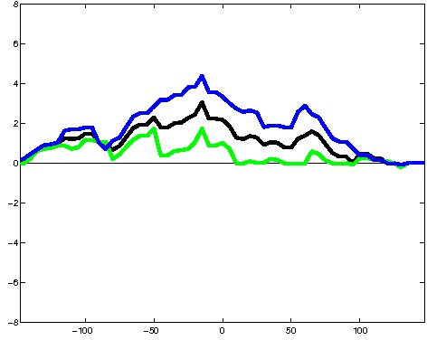
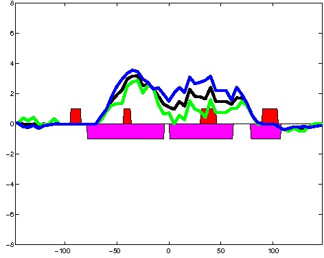
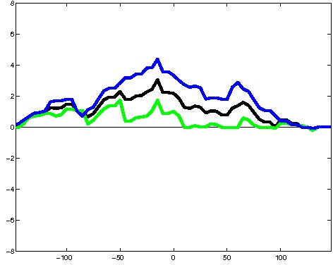
; picked in K562 (state 1:Tss, DNase); matched; chr11:64,794,729-64,795,023 (295bp)")
; picked in K562 (state 1:Tss, DNase); matched; chr1:54,355,409-54,355,703 (295bp)") 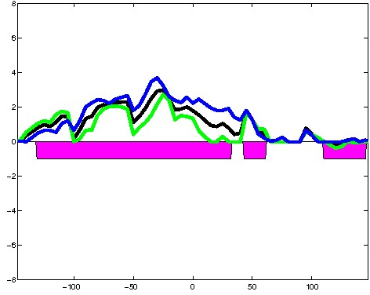
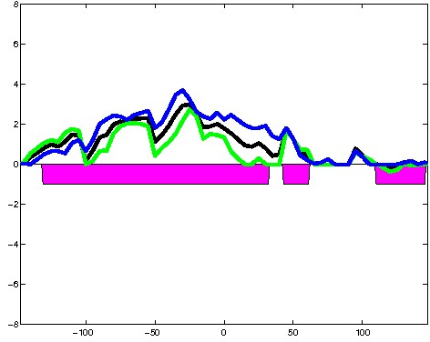
; picked in K562 (state 1:Tss, DNase); matched; chr12:124,907,169-124,907,463 (295bp)")
; picked in K562 (state 1:Tss, DNase); matched; chr9:139,267,989-139,268,283 (295bp)")
; picked in K562 (state 1:Tss, DNase); matched; chr10:124,913,589-124,913,883 (295bp)")
; picked in K562 (state 1:Tss, DNase); matched; chr2:47,195,089-47,195,383 (295bp)")
; picked in K562 (state 1:Tss, DNase); matched; chr6:2,765,169-2,765,463 (295bp)")
; picked in K562 (state 1:Tss, DNase); matched; chr16:58,035,129-58,035,423 (295bp)")
; picked in K562 (state 1:Tss, DNase); matched; chr9:103,361,029-103,361,323 (295bp)")
; picked in K562 (state 1:Tss, DNase); matched; chr7:5,601,589-5,601,883 (295bp)")
; picked in K562 (state 1:Tss, DNase); matched; chr10:120,514,549-120,514,843 (295bp)") 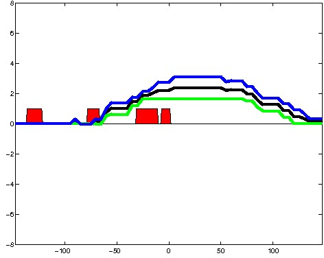
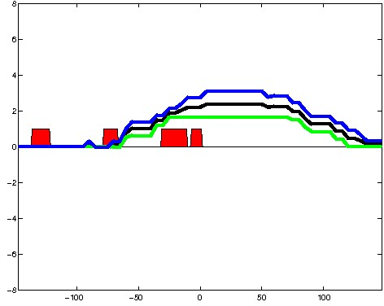
; picked in K562 (state 1:Tss, DNase); matched; chr1:6,187,769-6,188,063 (295bp)")
; picked in K562 (state 1:Tss, DNase); matched; chr16:88,528,389-88,528,683 (295bp)")
; picked in K562 (state 1:Tss, DNase); matched; chr14:24,616,489-24,616,783 (295bp)")
; picked in K562 (state 1:Tss, DNase); matched; chr17:26,368,149-26,368,443 (295bp)")
; picked in K562 (state 1:Tss, DNase); matched; chr3:138,655,089-138,655,383 (295bp)")
; picked in K562 (state 1:Tss, DNase); matched; chr16:50,099,689-50,099,983 (295bp)")
; picked in K562 (state 1:Tss, DNase); matched; chr2:86,850,889-86,851,183 (295bp)")
; picked in K562 (state 1:Tss, DNase); matched; chr1:113,258,009-113,258,303 (295bp)")
; picked in K562 (state 1:Tss, DNase); matched; chr19:5,803,969-5,804,263 (295bp)")
; picked in K562 (state 1:Tss, DNase); matched; chr16:28,874,589-28,874,883 (295bp)")
; picked in K562 (state 1:Tss, DNase); matched; chr11:818,669-818,963 (295bp)")
; picked in K562 (state 1:Tss, DNase); matched; chr19:49,314,209-49,314,503 (295bp)")
; picked in K562 (state 1:Tss, DNase); matched; chr18:72,922,569-72,922,863 (295bp)")
; picked in K562 (state 1:Tss, DNase); matched; chr12:49,393,529-49,393,823 (295bp)")
; picked in K562 (state 1:Tss, DNase); matched; chr2:54,198,009-54,198,303 (295bp)")
; picked in K562 (state 1:Tss, DNase); matched; chr6:71,108,709-71,109,003 (295bp)")
; picked in K562 (state 1:Tss, DNase); matched; chr5:1,594,529-1,594,823 (295bp)")
; picked in K562 (state 1:Tss, DNase); matched; chr5:137,514,269-137,514,563 (295bp)")
; picked in K562 (state 1:Tss, DNase); matched; chr11:65,308,089-65,308,383 (295bp)")
; picked in K562 (state 1:Tss, DNase); matched; chr9:33,025,029-33,025,323 (295bp)")
; picked in K562 (state 1:Tss, DNase); matched; chr2:227,700,089-227,700,383 (295bp)")